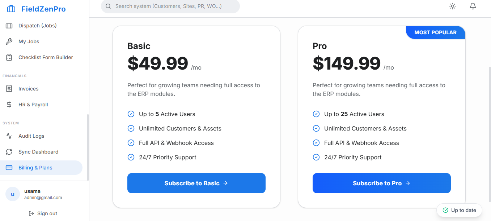

Why Every FM Company Needs Digital Checklists in 2026
⚡ Key Takeaways
- ✓Paper checklists create compliance risk — they can be falsified and provide no photo evidence
- ✓Digital checklists capture GPS location, timestamps, and photos for irrefutable audit trails
- ✓Fire safety, HVAC, cleaning, and building inspections all benefit immediately from digitization
- ✓The switch from paper to digital takes only 3 days with the right software
- ✓Analytics from digital checklists let you spot recurring issues before they become expensive
Paper checklists have been the backbone of facilities management for decades. But in 2026, they're the single biggest liability in your compliance chain. Here's why digital checklists aren't optional anymore — and how to make the switch.
The Problem with Paper Checklists

- No evidence trail — A tick on paper proves nothing. Was the inspection actually done? When? By whom?
- Easy to falsify — Technicians can tick every box without actually performing checks
- Lost or damaged — Paper gets wet, torn, lost in transit back to the office
- No photo proof — Clients increasingly demand photographic evidence of completed work
- Impossible to analyze — You can't spot trends or patterns from a stack of paper forms
- Compliance risk — During an audit, paper checklists are weak evidence
What Digital Checklists Give You
Photo Evidence
Require technicians to take before/after photos at each checkpoint. Indisputable proof of work.
Timestamps
Every checkbox is timestamped — you know exactly when each step was completed.
Location Data
GPS tagging confirms the technician was actually at the site when completing the checklist.
Reusable Templates
Build once, use forever. Create templates for HVAC inspections, fire safety, cleaning rounds, etc.
Analytics & Trends
Spot recurring issues, track completion rates, and identify underperforming areas automatically.
Audit-Ready
Full digital trail for compliance audits — who did what, when, where, with photographic evidence.
Industry Use Cases
🏢 Commercial Cleaning
Daily cleaning rounds with room-by-room checklists. Photo evidence of cleaned areas. Client sign-off captured digitally. Quality scores tracked over time.
â„ï¸ HVAC Maintenance
Preventive maintenance checklists with specific measurement fields (temperature readings, filter conditions). Historical data enables predictive maintenance scheduling.
🔥 Fire Safety Inspections
Mandatory monthly/quarterly fire safety checklists with photo evidence of extinguisher conditions, exit signs, and alarm testing. Compliance reports generated automatically.
🏗️ Building Maintenance
Floor-by-floor inspection checklists for common areas, elevators, parking structures. Issue flagging triggers automatic work orders for repairs.
🏆 How FieldZenPro's Checklist Builder Works
MytechERP includes a drag-and-drop checklist builder where you can create custom inspection forms with:
- Yes/No checkboxes
- Text fields for notes
- Photo upload requirements
- Pass/fail criteria
- Automatic scoring
Checklists are attached to work orders and completed by technicians on their mobile phones. All data flows into the audit log automatically.
Making the Switch (3-Day Plan)
- Day 1: Identify your top 5 most-used paper checklists and recreate them digitally
- Day 2: Assign a pilot team of 2–3 technicians to use digital checklists for one week
- Day 3: Review results, adjust templates, and roll out to the full team
Frequently Asked Questions
Build Your First Digital Checklist in 5 Minutes
MytechERP's checklist builder lets you create custom inspection forms — no coding required. Try it free for 14 days.
Start Free Trial →